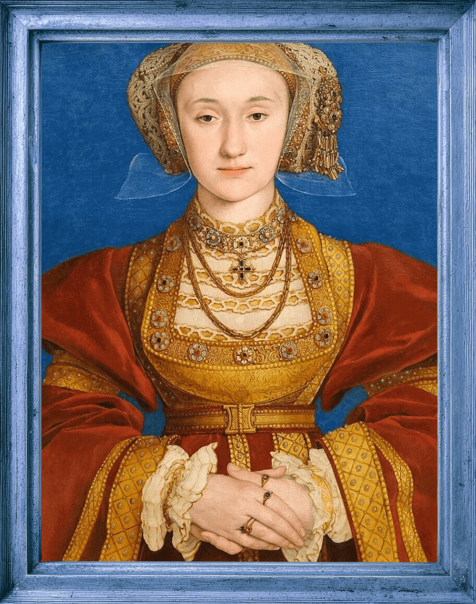

More About Anne of Cleves
She did the impossible. She survived the tyrant and became rich in her own right by doing so. But what else is known about this German Protestant Princess? Click the link and learn more!
The year was 1540, and Henry had been on the search for a new wife since the demise of poor Queen Jane. He was convinced that he still needed more male heirs for the kingdom, and he very much wanted to be in love again. Thus, he sent his favorite painter at the time, Hans Holbein, on a journey across the continent to paint the portraits of eligible maidens. He half fell in love with Anne of Cleves upon viewing her portrait, and he instructed his advisors to make the marriage happen.
Anne, age 25, stepped onto England's shores in December of 1539. Henry, who loved to surprise his lady loves in disguise, thought it would be a good idea to introduce himself to his prospective wife who was unfamiliar with Henry's games and England's customs, disguised as a lowly courtier. When Henry approached Anne of Cleves for the first time, he came off as an over-eager swain (let's also not forget that he was nearing his 400 pound weight by this time), and when he kissed her, Anne was so offended by the act that she wiped his kiss away.
The king took offense to her reaction, her looks (which, he decided, did not look like Holbein's portrait), and her strange smell. As the king walked away from this meeting, while still in front of his entire household, he was loudly overheard to say, "I like her not!."
Although Henry and Anne both had reservations about continuing with the marriage, the agreement between Cleves and England was necessary, and so they carried on, and were man and wife by January 6, 1540. This is where things get super interesting. The day after the wedding, the king made it very obvious that he had been unable to consummate the marriage because he found Anne to be so unattractive. But still, he was never outright rude to her or made a spectacle of her. Instead, he appealed for what he wanted—an annullment—and quickly. Apparently, a pretty little Kitty had caught his eye, and he needed to be free.
Anne of Cleves is considered to be the most intelligent of all of Henry's wives, merley by staying alive. When Henry displayed his displeasure and rumors began swirling that he would do away with this wife, too, Anne saw the light and agreed swiftly to an annulment.
Because Anne was so amenable and signed the paperwork so quickly, Henry was pleased with her. Therefore, as a concession for giving Henry what he wanted, she was given the Palace of Richmond, and Anne Boleyn's childhood home, Hever Castle. Anne was also given £4,000 annually, which would equal to anywhere between $3.5 to $4.5 million U.S. dollars, today, as well as other properties and chattel. She was to be known from that point as the sister to the King and she received all the accolades that position would come with. Also, a huge rarity in renaissance England, Anne retained her single status and independence for the rest of her life, outliving all six queens, Henry VIII, and retaining Mary and Elizabeth's friendships until her death in 1557. Due to these friendships, Anne of Cleves is the only of Henry's wives to be buried at Westminster Abbey.

She did the impossible. She survived the tyrant and became rich in her own right by doing so. But what else is known about this German Protestant Princess? Click the link and learn more!